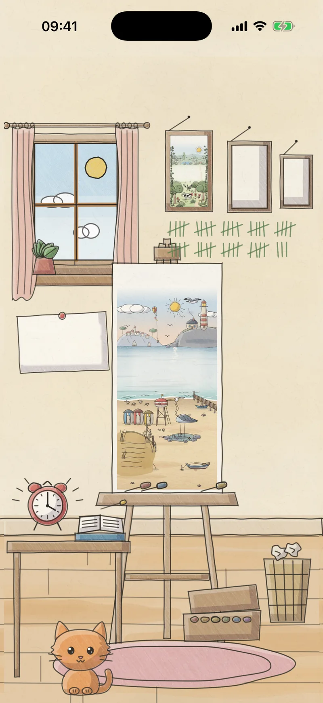
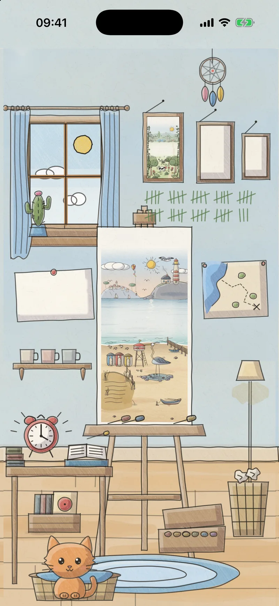

un obiettivo al giorno.
non una lista: uno solo, quello che rimandi da troppo.


tieni premuto il cerchio.
per chi rimanda da troppo.
per chi ha una lista lunga e non comincia mai. 1thing ti fa scegliere un obiettivo solo, piccolo, per oggi.
smetti di rimandare.
un obiettivo al giorno è abbastanza piccolo da cominciare davvero.
vedi quello che hai fatto.
ogni obiettivo completato resta: nel dipinto, nel calendario, sul muro dello studio.
niente sensi di colpa.
se salti un giorno non perdi niente. il dipinto ti aspetta.
un momento tuo, ogni giorno.
un gesto calmo, un disegno che cresce, un compagno che ti aspetta.
nel tuo studio vive un compagno.
ti aspetta lì ogni giorno, mentre dipingi.
scegli chi.
il tuo studio.
la stanza dove dipingi, tutta tua. cresce con te: ogni obiettivo lascia un segno, ogni dipinto finito trova posto alle pareti.
una tacca per ogni obiettivo completato.
i dipinti finiti, appesi alle pareti.





il tuo compagno, che ti aspetta.
tende, piante, lucine, tappeti: più di 40 cose da scegliere.
arredalo come vuoi.
pareti, tende, piante, lucine, tappeti: più di 40 cose.
come funziona.
scegli un obiettivo. uno solo, per oggi.
è così che si smette di rimandare: un piccolo passo alla volta.
quando lo completi, tieni premuto il cerchio.
finché si chiude. è il tuo segno di fatto.
ogni obiettivo completato dipinge un pezzo del quadro.
con 30 il dipinto è finito. se salti un giorno, ti aspetta.


il dipinto cambia con la tua giornata.
il dipinto prende la luce dell'ora in cui completi il tuo obiettivo.
- alba

- giorno

- tramonto

- notte

ogni giorno fatto resta.
nel calendario ritrovi i 30 pezzi del dipinto. tocchi un giorno e rileggi l'obiettivo, e la nota che hai lasciato.
tocca un giorno fatto per rileggerlo.
perché funziona.
1thing è costruita su idee che la ricerca ha studiato a lungo.
segnare i progressi aiuta a raggiungere gli obiettivi.
una meta-analisi di 138 studi: chi tiene traccia dei progressi arriva più spesso all'obiettivo, soprattutto se li registra.
in 1thing: il dipinto e il calendario.
Harkin e colleghi, Psychological Bulletin, 2016i piccoli passi avanti contano.
in circa 12.000 diari di lavoro, i giorni migliori erano quelli in cui si faceva un piccolo passo avanti.
in 1thing: un obiettivo piccolo, ogni giorno.
Amabile e Kramer, The Progress Principle, 2011saltare un giorno non rompe un'abitudine.
seguendo 96 persone per 12 settimane, saltare un'occasione non ha cambiato in modo apprezzabile la nascita dell'abitudine.
in 1thing: se salti un giorno, il dipinto ti aspetta.
Lally e colleghi, European Journal of Social Psychology, 2010perdonarsi aiuta a rimandare meno.
gli studenti che si erano perdonati per aver rimandato lo studio di un esame hanno rimandato meno per l'esame successivo.
in 1thing: niente sensi di colpa, niente serie da perdere.
Wohl, Pychyl e Bennett, Personality and Individual Differences, 2010
sono studi sulle idee su cui si basa l'app, non su 1thing.
e ogni giorno, un aiuto.
-
nei giorni vuoti, l'obiettivo giusto te lo trovo io.
so cosa ti sta a cuore: te lo propongo, tu scegli.
-
icona e widget come vuoi tu.
otto icone e il tuo obiettivo sulla schermata home, dentro il dipinto.
-
un promemoria al giorno.
all'ora che scegli tu, con il tono che preferisci.


cosa dipingiamo adesso?
quando un dipinto è finito, lo appendo nello studio e ne comincia un altro.


un obiettivo al giorno.
per iPhone.